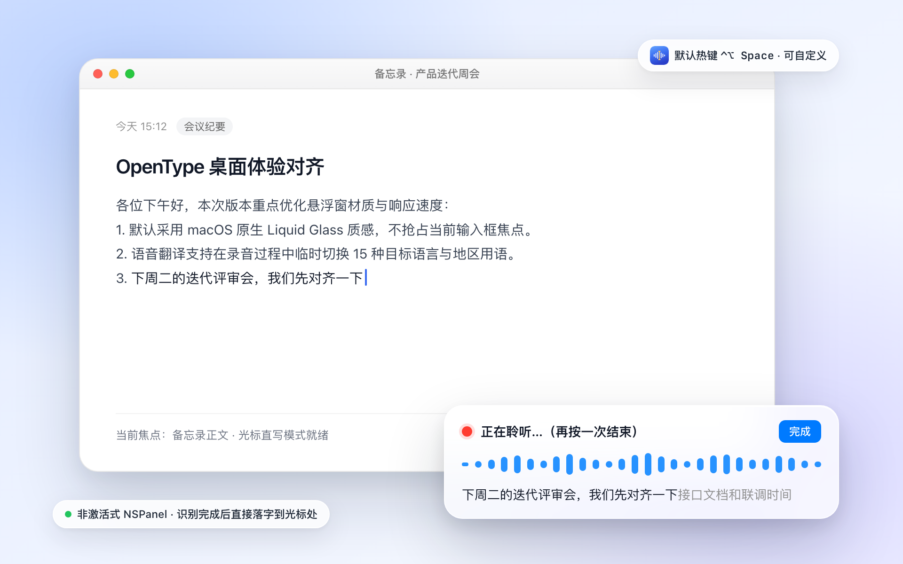
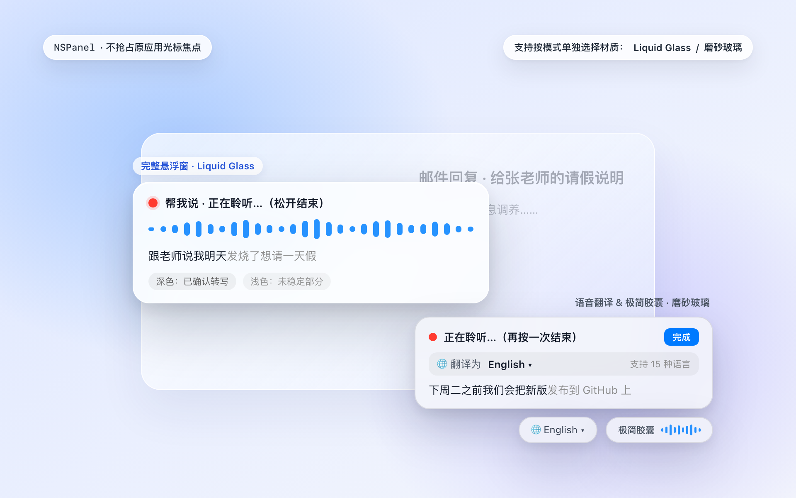
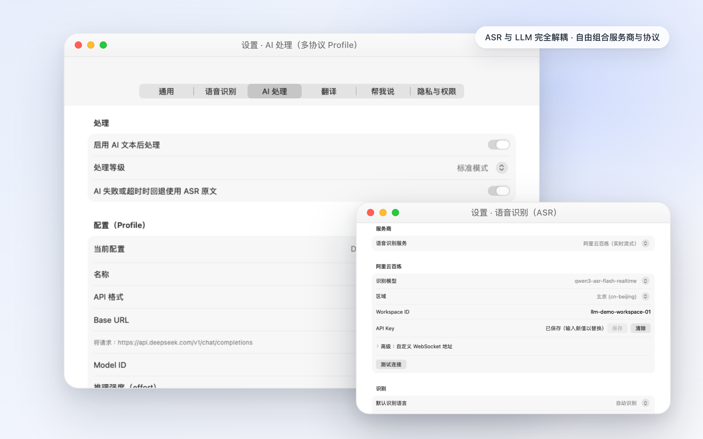
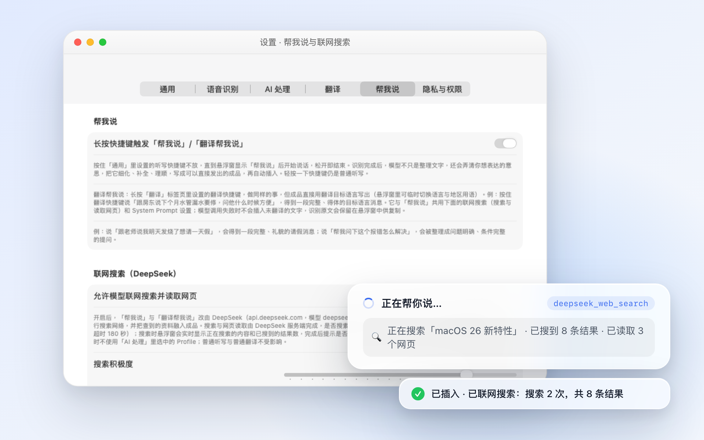
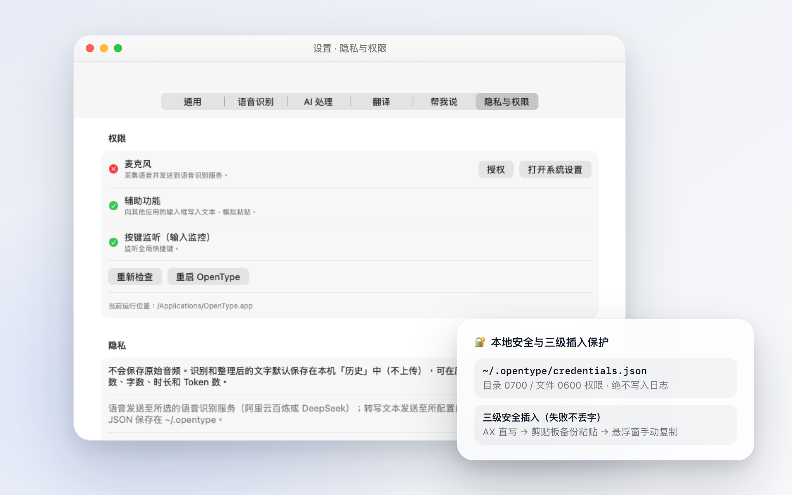
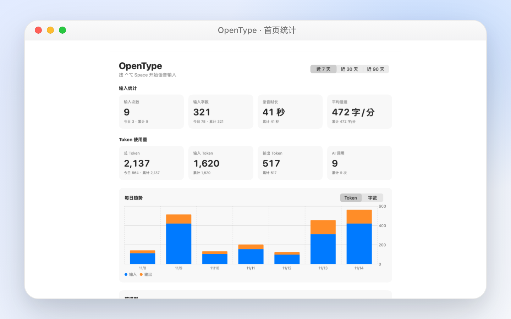
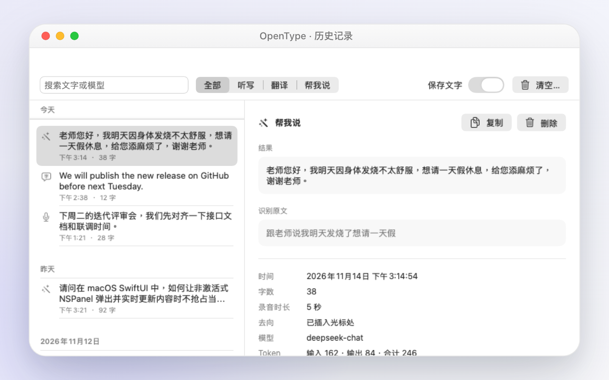
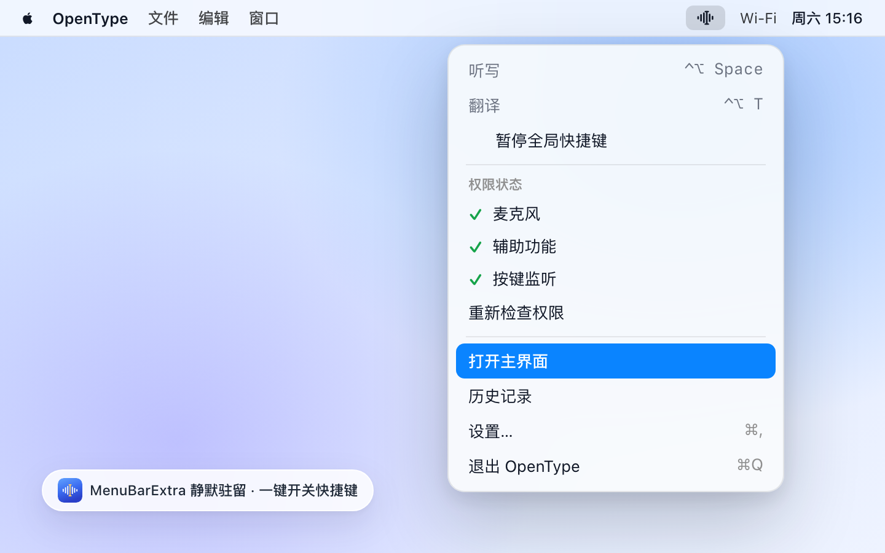
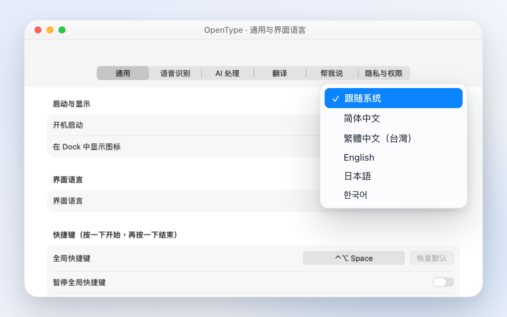

口述：“跟老师说我明天发烧了想请一天假”
落字：“老师您好，我明天发烧了，想请一天假，给您添麻烦了，谢谢老师。”
用 OpenType 在任何地方说话成文
面向 macOS 的全局 AI 语音输入工具。在任意输入框里说话，文字经整理后直接落在当前光标处；支持听写、语音翻译与「帮我说」。
原生兼容主流语音识别与大模型协议
阿里云百炼
DeepSeek
OpenAI API
Anthropic
macOS 26+

assets/screenshots/hero-main.png
主展示屏幕截图占位
放置：在任意输入场景下唤起 OpenType Liquid Glass 悬浮窗进行语音输入时的真实桌面截图
开始使用
三种语音会话模式共用一条流水线，按你的表达意图选择触发方式。
听写
说完自动去除口头禅、补全标点符号，并直接插入原来的输入位置。支持「原始 / 标准 / 深度整理」三档处理等级。
语音翻译
先理顺口语再翻译成目标语言，支持 15 种语言；录音过程中可在悬浮窗里临时切换语种与地区用语（台湾/港澳、巴西/葡萄牙）。
帮我说
模型不只是纠错，而是将你的随口念头细化、补全为可直接发出的成品。不编造未提及的人名、数字或日期，可开启联网搜索。
听写与翻译快捷键均可完全自定义，支持单键、组合键、左右独立修饰键（如右 ⌥）或 fn 键；Esc 保留为取消键，取消时不插入文字。
为顺滑的日常表达而打造
不抢焦点的非激活式悬浮窗
悬浮窗采用非激活式 NSPanel，弹出与识别期间原应用的光标焦点始终保持不变。实时呈现音量波形以及「已确认文字 + 浅色未稳定部分」，并可按模式单独选择 Liquid Glass 或毛玻璃材质。

assets/screenshots/01-overlay.png
悬浮窗材质与实时波形截图占位
放置：Liquid Glass 完整悬浮窗实机截图（显示音量波形、已确认与浅色未稳定文字）
ASR 与 LLM 完全解耦
语音识别可选阿里云百炼实时流式（qwen3-asr-flash-realtime / qwen-audio-3.1-asr-flash-message）或 DeepSeek 整段上传；文本处理内置 OpenAI Responses、Chat Completions 与 Anthropic Messages 三种协议适配器，支持多套 Profile 随时切换。

assets/screenshots/02-asr-llm-settings.png
「设置 → 语音识别 / AI 处理」截图占位
放置：AI 处理多协议 Profile 配置页面（或语音识别设置页）截图
「帮我说」支持联网搜索
在「设置 → 帮我说」中开启 DeepSeek 联网搜索后，可通过 0–100% 滑块调节搜索积极度。搜索与网页读取在服务端完成，悬浮窗实时展示“正在搜索 · 已搜到 N 条结果 · 已读取 M 个网页”。

assets/screenshots/03-web-search.png
联网搜索进度与结果反馈截图占位
放置：「帮我说」联网搜索进行中提示条或「设置 → 帮我说」页面截图
三级安全插入与本地隐私
依次尝试 Accessibility 直写、自动备份恢复剪贴板的模拟粘贴与悬浮窗手动复制，绝不向密码框、安全输入模式或已切换的应用误写。不落盘原始音频，API Key 以 0600 权限存于 ~/.opentype/credentials.json。

assets/screenshots/04-privacy-permissions.png
「设置 → 隐私与权限」截图占位
放置：麦克风 / 辅助功能 / 输入监控授权状态与本地隐私面板截图

surface-1-home.png
首页统计看板
首页统计
直观记录输入次数、累计字数、录音时长与 Token 用量。
SwiftUI 原生主窗口
surface-2-history.png
本地历史记录
历史记录
识别与整理文本仅存本机，支持全文搜索、一键复制与随时清空。
~/Library/Application Support/OpenType
surface-3-menubar.png
菜单栏下拉面板
菜单栏控制
快速查看听写与翻译快捷键、暂停全局监听、检查三项系统权限状态。
MenuBarExtra
surface-4-languages.png
五语本地化设置
五语界面
支持简中、繁中、English、日本語、한국어，跟随系统或手动切换。
设置 → 通用 → 界面语言从随口一句到得体成品
口述：“帮我问下这个报错怎么解决”
落字：自动组织成包含当前现象、触发条件与期望结果的清晰技术提问。
口述：“下周二之前我们会把新版发到 GitHub 上”
落字：“We will publish the new release on GitHub before next Tuesday.”
设为仅修饰键（如 fn 或右 ⌥）时，轻点松开即触发；按住期间若同时按下 ⌘C 或 ⌥ + 点击，自动取消触发，避免日常操作冲突。
开始使用 OpenType
macOS 26.0+ · Apple Silicon (arm64) · 开源免费、自备 API Key
首次打开如遇 Gatekeeper 拦截，可拖入「应用程序」后执行：
xattr -dr com.apple.quarantine /Applications/OpenType.app